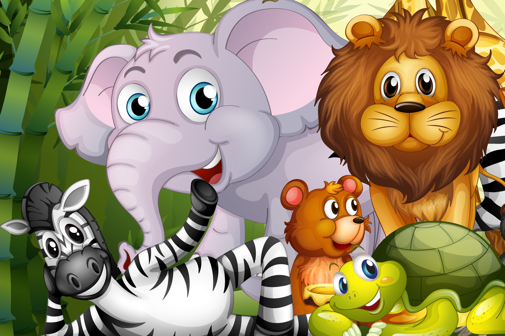
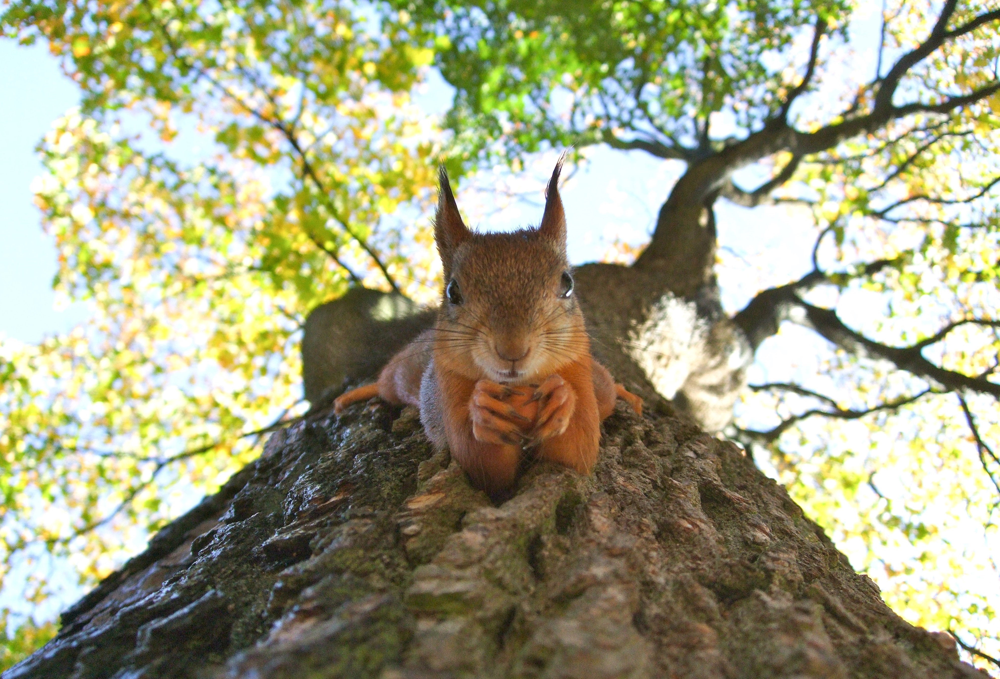
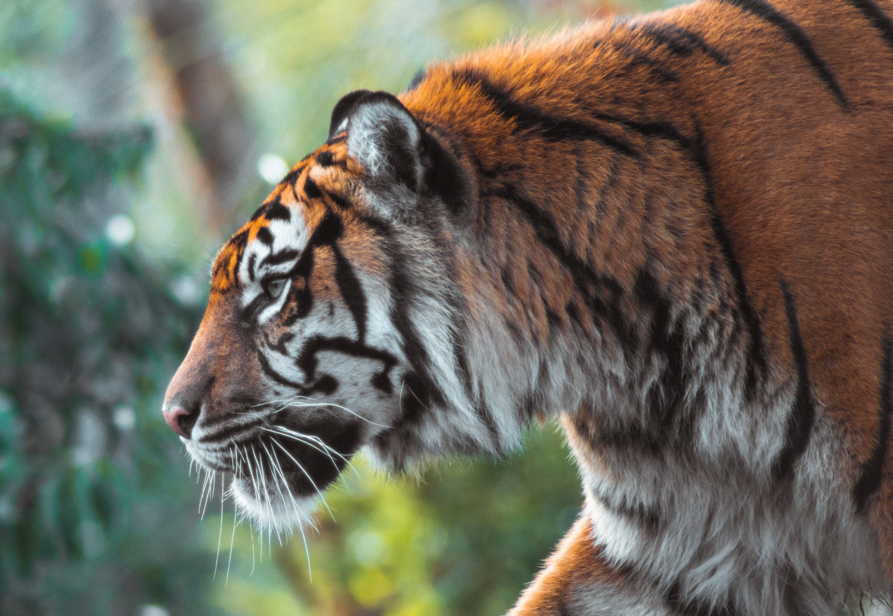

Animal Lovers
 Fig.1 Rabbit
Fig.1 Rabbit
How Rabbits see the world!
Learn all about how rabbits see the world.
Can bunnies see colour? Can rabbits see in the dark?
Rabbits can see all around them at once. Most of their vision is long-sighted
(seeing better at far distances), except in front where

Fig.2 Squirrels
What are squirrels favorite food?
What’s the absolute best food for squirrels?
Most people think that squirrels only eat nuts and seeds, but that’s not the case. While a large

Fig.3 Tiger
How does a tiger catch its prey?
How they hunt and where to see in the wild
Tigers use their tails to communicate with one another. A tiger is relaxed if their tail is
loosely hanging. Aggression is displayed by